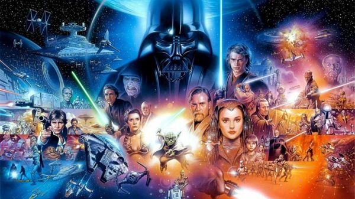

Universo Cinematográfico
Si sos nuevo en el universo de Star Wars y no sabés por dónde empezar, o sos un fan apasionado que quiere ponerse al día con todas las producciones, esta sección es para vos. Acá vas a encontrar una guía completa del universo cinematográfico, con el orden de las películas y series para que puedas recorrer la saga de la mejor manera.
Ver más...